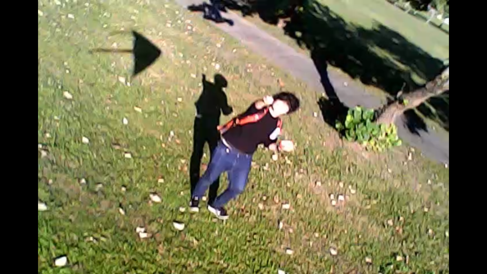

Interaction Design

這是搭配第一本小誌的影像紀錄，拍攝地點於新北市溪洲河濱公園 24.978654891780124, 121.43665579092361
日期: 20240130
長度: 5 min 7 sec
「致電山古志（Calling Yamakoshi ）」是件透過風箏的形式與山古志住民互動的作品。風箏上倒映著由天空看到土地的形狀，風箏上安裝著指向拉住繩子的人的低解析度相機，在空中拍下瞬間影像。將影像展開後，將拼接成一段飛行的軌跡，sometimes on and off 好像鏈上居民若有似無連結山古志住民的心情。本影像紀錄為第一次成功試飛。
特別感謝：Vivi, Pinhua, Rohan, Cathy, Olive, Bon, Mor Messeri, Shine Yang, and me (Yipin)
This is the video associated with "Calling Yamakoshi - Zine".
Location: New Taipei City 24.978654891780124, 121.43665579092361
Date: 20240130
Duration: 5 min 7 sec
"Calling Yamakoshi" is a work that interacts with the residents of Yamakoshi village through the form of a kite. The kite reflects the shape of the land as seen from the sky. It is equipped with a low-resolution camera pointing towards the person holding the string, capturing fleeting images in the air. Once these images are expanded, they are pieced together to form a trajectory of flight. This sometimes on and off sequence resembles the subtle, intermittent connections of the on-chain villagers' emotions towards Yamakoshi local people. This footage documents the first successful test flight.
Special thank: Vivi, Pinhua, Rohan, Cathy, Olive, Bon, Mor Messeri, Shine Yang and me (Yipin)
Yamakoshi, DAO, Treasure Hill Artist Village, 2023 Crypto Residency - Blockchain Fieldwork, Crypto Residency, Blockchain Fieldwork, 2023, video, kite, kite making, kite flying, 2024